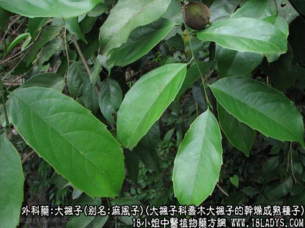

原文连接:https://www.daquan.com/post/2102.html



大枫子为少常用中药。始载元.宋震亨著《本草衍义补遗》。
别名：大风子、米康茄、尾加木、麻风子、驱虫大风子、海南大风子。
来源：为大枫子科植物常绿乔木大枫子等的干燥成熟种子，栽培或野生。
产地：主产于泰国、越南，此外印尼、马拉西亚、印度、柬埔寨等地均有生产。我国台湾、广西、云南、海南岛已有栽培。
性状鉴别：种子呈不规则的卵圆形，稍有钝棱，长约1.5～2.5厘米，直径约1～2厘米。外皮灰棕色或灰褐色，有细纹，较小的一端有明显的沟纹，皮厚约1～2毫米。质坚硬，砸破后，种皮内面光滑。浅黄色至黄棕色，种仁与种皮分离，外被一层红棕色或暗紫色薄膜。种仁两瓣，灰白色，陈久变成黄棕色，富油质。气微，味淡。
以个大，子仁饱满，灰白色，油性足者为佳。
主要成分：含大枫子油（为大枫子油酸、次大枫子油酸等的甘油酯）、蛋白质。
药理作用：1、抗真菌。实验证明，大枫子对多种皮肤癣菌有抑制作用。
2、抗麻风菌。大枫子油治疗麻风，临床有一定疗效。服药前后对比，病理组织片可见细菌减少、菌体变形、破碎。
炮制：除去种皮，压榨取脂肪油用。或取仁制霜（内服）。
性味：辛，热，有毒。
归经：入肺、肝经。
功能：祛风燥湿，攻毒杀虫。
主治：麻风。外用治毒疮，疥癣，手背皱裂等症。
临床应用：1、治疗麻风。可用大枫子煅末加轻粉，以麻油调制后外涂患处，同时可配合内服扫风丸（以大枫子为首味药），治疗瘤型和结核型麻风，根据短期观察，可使症状减轻，又可采用其制大枫子酸乙酯，作肌肉注射。
2、治神经性皮炎。可用大枫子30g，白藓皮30g，五倍子15g，松香12g，鹤虱草12g，苦参、黄柏、苍术、防风各9g，混合研末，作烟熏，并配合外用止痒药膏和内服溴剂、维生素等，有一定疗效。
3、治疗手癣。可用大枫子油配以核桃仁，猪脂等制成药丸，外搓患部，有一定疗效。
使用注意：大枫子毒性较大，内服易引起头晕、头痛、恶心、呕吐。注射部位有刺激症状。
用量：外用适量，内服量参考扫风丸。
处方举例：扫风丸：大枫子1500g，苍术、白附子、桂枝、当归、西秦艽、白芷、钩藤、木瓜、川芎、肉桂、菟丝子、天麻、礞石、川牛膝、首乌、千年健、知母、栀子、川乌、草乌、威灵仙、钻地风各60g，苦参、蒺藜、小胡麻、苍耳子、防风各120g，玉米、荆芥各240g，白花蛇30g，共为末，水调为丸，成人初用0.6g，一日二次，三天后如无恶心、呕吐等反应，可每次加1.5g，至8天后，日服三次。
注：1、种子有毒。内服可致恶心呕吐、胸腹痛，严重者出现溶血、肾炎、肝脂肪性变。见《广西本草选编》。
2、除正文所述，尚有印度大枫子、缅甸大枫子、海南大枫子等，同等药用。